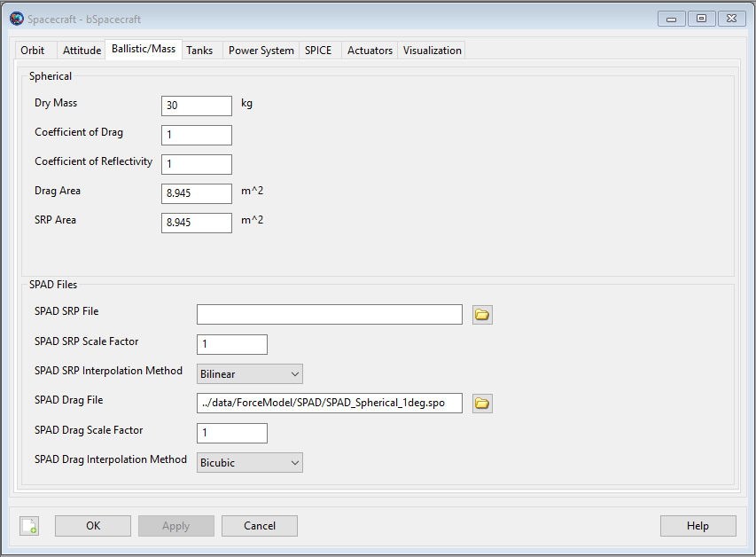

Spacecraft Ballistic/Mass Properties — The physical properties of the spacecraft
The Spacecraft ballistic and mass properties include the drag and SRP areas and coefficients as well as the spacecraft dry mass. These quantities are used primarily in orbital dynamics modeling. GMAT supports spherical SRP and drag models, and a higher fidelity drag and area model called SPAD.
GMAT also supports an extended set of mass properties that are used in modeling torques and changes in angular momentum. The Spacecraft extended mass properties are the spacecraft dry center of mass and dry moment of inertia.
Both the standard and extended mass property models collaborate with FuelTank models to compute the aggregation of the dry spacecraft mass properties and the mass properties of the tank contents. The details of how this is done are discussed in the Remarks.
See Also: Propagate, Propagator, Spacecraft, ChemicalTank,
| Field | Description | ||||||||||||
|---|---|---|---|---|---|---|---|---|---|---|---|---|---|
| AddPlates | For use with the NPlate area model. Selection of Plate objects that comprise the spacecraft area model. See also Plate
| ||||||||||||
| AtmosDensityScaleFactor | A multiplicative scale factor applied to the nominal atmospheric density computed by the chosen density model.
| ||||||||||||
| Cd | The coefficient of drag used to compute the acceleration due to drag for the spherical drag area model. This parameter is ignored when using SPAD drag modeling.
| ||||||||||||
| CenterOfMassOffsetX | X component of offset to center of mass. This offset is only used with the "Lookup" model, allowing for deviations caused by factors not accounted for in pre-tabulated data.
| ||||||||||||
| CenterOfMassOffsetY | Y component of offset to center of mass. This offset is only used with the "Lookup" model, allowing for deviations caused by factors not accounted for in pre-tabulated data.
| ||||||||||||
| CenterOfMassOffsetZ | Z component of offset to center of mass. This offset is only used with the "Lookup" model, allowing for deviations caused by factors not accounted for in pre-tabulated data.
| ||||||||||||
| CenterOfMassTableFileName | Name of file containing center of mass interpolation data for various values of total spacecraft mass. The total mass includes both the dry mass of the spacecraft and the mass of the contents of fuel tanks.
| ||||||||||||
| Cr | The coefficient of reflectivity used to compute the acceleration due to SRP for the spherical area model. A value of zero means the spacecraft is translucent to incoming radiation. A value of 1.0 indicates all radiation is absorbed and all the force is transmitted to the spacecraft. A value of 2.0 indicates all radiation is reflected and twice the force is transmitted to the spacecraft. This parameter is ignored when using SPAD SRP modeling.
| ||||||||||||
| Drag Area | The area used to compute acceleration due to atmospheric drag for the spherical drag area model. This parameter is ignored when using SPAD drag modeling.
| ||||||||||||
| DryCenterOfMassX | The X component of dry spacecraft center of mass in BCS (m)
| ||||||||||||
| DryCenterOfMassY | The Y component of dry spacecraft center of mass in BCS (m)
| ||||||||||||
| DryCenterOfMassZ | The Z component of dry spacecraft center of mass in BCS (m)
| ||||||||||||
| DryMass | The dry mass of the Spacecraft (does not include fuel mass).
| ||||||||||||
| DryMomentOfInertiaXX | The XX component of the dry spacecraft moment of inertia
| ||||||||||||
| DryMomentOfInertiaXY | The XY component of the dry spacecraft moment of inertia
| ||||||||||||
| DryMomentOfInertiaXZ | The XZ component of the dry spacecraft moment of inertia
| ||||||||||||
| DryMomentOfInertiaYY | The YY component of the dry spacecraft moment of inertia
| ||||||||||||
| DryMomentOfInertiaYZ | The YZ component of the dry spacecraft moment of inertia
| ||||||||||||
| DryMomentOfInertiaZZ | The ZZ component of the dry spacecraft moment of inertia
| ||||||||||||
| ExtendedMassPropertiesModel | Selection of whether to model center of mass, moment of inertia, both, or neither. When interpolating files using the "Lookup" model the center of mass and moment of inertia can be selected independently. With the "Analytic" model the moment of inertia computation depends on center of mass, so selecting "MomentOfInertia" will also compute the center of mass.
| ||||||||||||
| ExtendedMassPropertiesModelType | Selection of models used to compute center of mass and moment of inertia. The available models are to interpolate mass property files ("Lookup") or to compute the system mass properties based on the dry spacecraft mass properties and the mass properties of the contents of each FuelTank ("Analytic"). Note: The analytic models are not yet implemented. Since this model is ultimately going to be the default, we have set the default is set to "Analytic"; it is expected that the user will explicitly set this to "Lookup" when setting up interpolation table files.
| ||||||||||||
| MassPropertiesTableFilePath | Path to files used to interpolate center of mass or moment of inertia data.
| ||||||||||||
| MomentOfInertiaOffsetXX | XX component of offset to moment of inertia. This offset is only used with the "Lookup" model, allowing for deviations caused by factors not accounted for in pre-tabulated data.
| ||||||||||||
| MomentOfInertiaOffsetXY | XY component of offset to moment of inertia. This offset is only used with the "Lookup" model, allowing for deviations caused by factors not accounted for in pre-tabulated data.
| ||||||||||||
| MomentOfInertiaOffsetXZ | XZ component of offset to moment of inertia. This offset is only used with the "Lookup" model, allowing for deviations caused by factors not accounted for in pre-tabulated data.
| ||||||||||||
| MomentOfInertiaOffsetYY | YY component of offset to moment of inertia. This offset is only used with the "Lookup" model, allowing for deviations caused by factors not accounted for in pre-tabulated data.
| ||||||||||||
| MomentOfInertiaOffsetYZ | YZ component of offset to moment of inertia. This offset is only used with the "Lookup" model, allowing for deviations caused by factors not accounted for in pre-tabulated data.
| ||||||||||||
| MomentOfInertiaOffsetZZ | ZZ component of offset to moment of inertia. This offset is only used with the "Lookup" model, allowing for deviations caused by factors not accounted for in pre-tabulated data.
| ||||||||||||
| MomentOfInertiaTableFileName | Name of file containing moment of inertia interpolation data for various values of total spacecraft mass. The total mass includes both the dry mass of the spacecraft and the mass of the contents of fuel tanks.
| ||||||||||||
| NPlateSRPEquateAreaCoefficients | Equate or link NPlate model SRP area coefficients for estimation. When estimating the AreaCoefficient for one or more plates, any plates specified in this list will be forced to have the same value of AreaCoefficient during the estimation process. Only applicable when the NPlate area model is in use and solving for AreaCoefficient.
| ||||||||||||
| SPADDragFile | Name (and optionally path information) of SPAD drag model file.
| ||||||||||||
| SPADDragInterpolationMethod | Interpolation method for SPAD drag vectors.
| ||||||||||||
| SPADDragScaleFactor | Scale factor applied to the drag force when using a SPAD drag area model.
| ||||||||||||
| SPADSRPFile | Name (and optionally path information) of SPAD SRP model file.
| ||||||||||||
| SPADSRPInterpolationMethod | Interpolation method for SPAD SRP model vectors.
| ||||||||||||
| SPADSRPScaleFactor | Scale factor applied to SRP force when using a SPAD SRP area model.
| ||||||||||||
| SRPArea | The area used to compute acceleration due to solar radiation pressure for the spherical SRP area model. This parameter is ignored when using SPAD SRP modeling.
|
|  |
The GUI interface for ballistic and mass properties is contained on the Ballistic/Mass tab of the Spacecraft resource. You can enter physical properties such as the drag and SRP areas and coefficients and the Spacecraft dry mass which are used in orbital dynamics modeling. GMAT supports a spherical SRP model and a SPAD (Solar Pressure and Aerodynamic Drag) file.
GMAT supports a spherical (sometimes called a "cannonball") area model for drag and SRP modeling. In the spherical model, the area is assumed to be independent of the spacecraft's orientation with respect to the local velocity vector and the sun vector. The spherical area model is selected by setting the configured ForceModel SRP.SRPModel and Drag.DragModel to Spherical. For more details on the computation and configuration of drag and SRP models see the Force Model documentation.
GMAT supports a multi-plate area model for SRP modeling. In the NPlate model, the area is built up from a collection of Plate resources, each specifying a separate area, orientation, and reflectivity properties. The NPlate area model is selected by setting the configured ForceModel SRP.SRPModel to NPlate. The NPlate model is not currently available for drag modeling. For more details on the configuration of the NPlate model, see the Plate documentation.
SPAD stands for Solar Pressure and Aerodynamic Drag. A SPAD file can be used for high fidelity SRP and drag modeling taking into account the physical properties of the spacecraft (shape and reflectivity) and the spacecraft attitude. SPAD files contain tabulated data representing the spacecraft area scaled by physical properties like Cr including specular, diffuse, and reflective properties. Area data in the SPAD file is tabulated as a function of azimuth and elevation in the spacecraft body frame. In the case of SRP modeling, the azimuth and elevation tabulated on the file should be the azimuth and elevation of the vector from the Spacecraft to the Sun, expressed in the body frame. For drag modeling, the azimuth and elevation denote the direction of the spacecraft velocity vector relative to the rotating atmosphere. The SPAD area model is selected by setting the configured ForceModel SRP.SRPModel and Drag.DragModel to SPADFile.
To compute the SRP or drag acceleration at each integration point, GMAT determines the sun or relative velocity vector’s azimuth and elevation in the spacecraft body frame at the integration time, and then interpolates the SPAD data using bi-linear or bi-cubic interpolation. Since the SRP or drag vector is taken in the spacecraft body frame, this formulation results in an attitude dependent acceleration. For more details on the computation and configuration of drag and SRP models see the Force Model documentation.
When using a SPAD file, GMAT uses the attitude defined on the Spacecraft resource to compute the Sun's or relative velocity vector in the body frame. If the attitude uses a coordinate system with Axes set to ObjectReferenced, and those axes refer back to the Spacecraft orbit state (i.e. VNB or LVLH systems), GMAT holds the attitude constant over a given integration step. In those cases, we recommend carefully choosing a maximum step size small enough to ensure the resulting approximation is acceptable for your application.
A valid SPAD file header, and the first three lines of data are shown below for illustrative purposes. Note, GMAT does not use all values provide on the file and GMAT's usage of SPAD files is described in detail in the table below the example.
Version : 4.21
System : sphericalSat
Analysis Type : Area
Pixel Size : 5
Spacecraft Size : 436.2
Pressure : 1
Center of Mass : (50.9, 184.9, -49)
Current time : May 7, 2009 15:53:38.00
Motion : 1
Name : Azimuth
Method : Step
Minimum : -180
Maximum : 180
Step : 5
Motion : 2
Name : Elevation
Method : Step
Minimum : -90
Maximum : 90
Step : 5
: END
Record count : 2701
AzimuthElevatio Force(X) Force(Y) Force(Z)
degrees degrees m^2 m^2 m^2
------- ------- --------- --------- --------- ---------
-180.00 -90.00 -0.00000000000000 -0.00000000000000 -8.94500000000000
-180.00 -85.00 -0.77960811887780 -0.00000000000000 -8.91096157443066
-180.00 -80.00 -1.55328294923069 -0.00000000000000 -8.80910535069420 A SPAD file contains three sections as illustrated below. Data specifications for items in each section are described in the tables below. A SPAD file header may contain many fields but only a few are used by GMAT as described below. Other fields are ignored.
| Keyword | Required | Description and Supported Values |
|---|---|---|
| Analysis Type | Y | The SPAD software can creates files with Analysis Types of Solar Pressure, Area, and Drag. GMAT only supports the Area option. Example: |
| Pressure | N | SPAD supports the ability to apply a scale factor for SRP and drag. GMAT does not read this value, and its purpose in the SPAD file is to inform the user that the properties on the file have been scaled by the Pressure factor. The value is usually “1”. However, when not 1, it is possible to apply a scale factor twice, once from the value applied on the data in the SPAD file, and once from the SPADSRPScaleFactor or SPADDragScaleFactor. Care should be taken to ensure that if the desired scale factor was applied during file creation that it is not reapplied in GMAT. |
The SPAD file Motion Data section describes the data contained in the body of the file. The Motion Data fields used by GMAT are described below. Others are ignored.
| Keyword | Required | Description and Supported Values |
|---|---|---|
| Motion | Y | Together, the Motion and Name fields specify the type of data in the first two columns of the body of the file. GMAT currently supports Azimuth and Elevation Motion only (no articulating appendages) and requires that the first Motion is Azimuth and the second Motion is Elevation as shown below. Examples: and |
| Name | Y | Together, the Motion and Name fields specify the type of data in the first two columns of the body of the file. GMAT currently supports Azimuth and Elevation Motion only (no articulating appendages) and requires that the first Motion is Azimuth and the second Motion is Elevation as shown below. Examples: and |
| Method | Y | The step size in the independent variable. The only supported value is Step. Example: |
| Maximum | Y | The maximum value for an independent variable (Motion Type). For Azimuth, Maximum must be 180, and for Elevation Maximum must be 90. Example: |
| Minimum | Y | The minimum value for an independent variable. (Motion Type). For Azimuth, minimum must be -180, and for Elevation minimum must be -90. Example: |
| Step | Y | The step size for the independent variable (Motion Type). If Step does not divide evenly into the variable range, then errors may occur because the maximum and/or minimum values may not be on the file. Example: Motion : 1 Step : 15 |
| Record count | Y | Record count is the number of rows of data in the data segment. Record count = (360/(Azimuth Step) +1)*(180/(Elevation Step) +1). Example: |
The SPAD file data block contains tabulated force modeling data as described below.
| Keyword | Required | Description and Supported Values |
|---|---|---|
| Azimuth | Y | Azimuth data column. Must be first column in the data. Units must be degrees. Azimuth is the azimuth of the vector from spacecraft to Sun (for SRP, atan2(ySun,xSun)), or the relative velocity vector (for drag) expressed in the body frame. Example: |
| Elevation | N | Elevation data column. Must be second column in the data. Units must be degrees. Elevation is the elevation of the vector from spacecraft to Sun (for SRP, atan2(zSun,sqrt(xSun^2 + ySun^2)), or the relative velocity vector (for drag) expressed in the body frame. Example: |
| Force(*) | N | Area vector columns. Must be columns 3-5 in the data. Quantities must be in base units of m^2,mm^2,cm^2,in^2, or ft^2. If another unit is provided in the header lines, an exception is thrown. The area vector is the direction of the resulting SRP force in the spacecraft body frame, scaled by area and reflectivity properties. Example: See code listing above. |
The TotalMass property of a Spacecraft is a read-only property that is the sum of the DryMass value and the sum of the fuel mass in all attached fuel tanks. GMAT’s propagators will not allow the total mass of a spacecraft to be negative. However, GMAT will allow the mass of a ChemicalTank to be negative. See the ChemicalTank documentation for details.
In addition to computing the TotalMass property of a Spacecraft, GMAT can compute the SystemCenterOfMass and SystemMomentOfInertia properties. Like TotalMass these properties are read-only and they are computed from the corresponding properties of the dry Spacecraft. The resulting SystemCenterOfMass is expressed in the Spacecraft's body coordinate system (BCS), and the resulting SystemMomentOfInertia is with respect to the SystemCenterOfMass.
There are two models for computing the extended mass properties
the Lookup option which interpolates lookup tables where mass is the independent variable and either center of mass or moment of inertia is the dependent variable, and
the Analytic option, which computes the system properties from the dry properties and the fuel properties.
At this writing the Lookup model is fully implemented and the Analytic model is under development.
The selection of models is controlled by two input parameters. The first, ExtendedMassPropertiesModelType, controls whether the Lookup or Analytic model is to be used. The second, ExtendedMassPropertiesModeled, controls which properties are to be computed. The TotalMass is always computed, if neither center of mass nor moment of inertia are needed, the value of ExtendedMassPropertiesModeled is set to None. This is the default. The default value of ExtendedMassPropertiesModelType is Analytic; this was chosen so that no lookup files would need to be specified in the default case. Until the analytic model for extended mass properties is completed choosing the Analytic model is only valid if ExtendedMassPropertiesModel is set to None. Put another way, the default is to not model the extended mass properties, and only compute TotalMass. The other options are CenterOfMass, MomentOfInertia, and CenterOfMassAndMomentOfInertia, and should be self-explanatory.
There are three elements to using the Lookup model: specifying the filenames to be used, understanding the formats of the lookup table files, and the offsets from interpolated data. The center of mass and moment of inertia lookup data are stored in separate files and interpolated independently. It is up to the user to get a consistent set of data for a given spacecraft; the Lookup model is more often used in mission operations for spacecraft whose properties are well understood. It is expected that the two files will be stored in the same folder; the parameter MassPropertiesTableFilePath is used to set a path to that folder. The file names are provided by the parameters CenterOfMassTableFileName and MomentOfInertiaTableFileName.
Both files are text files containing spacecraft masses as the first parameter in each row, and the corresponding center of mass or moment of inertia values completing the row.
The center of mass data is tabulated in a text file indexed by this value. A sample file is shown below. The header data in this file is informational only in the current implementation. The data shown there is not used in the current GMAT code, but may be used in a later implementation.
% Center of Mass Datafile
Spacecraft: SampleSat
Index: TotalMass
CoordinateSystem: BCS
Units: Meters
% Data order:
% RefMass, COMx COMy COMz
BeginData
2200 0.0220 0.0500 0.3000
2100 0.0215 0.0366 0.2888
2000 0.0211 0.0233 0.2777
1900 0.0206 0.0100 0.2666
1800 0.0202 -0.0033 0.2555
1700 0.0197 -0.0166 0.2444
1600 0.0193 -0.0300 0.2333
1500 0.0188 -0.0433 0.2222
1400 0.0184 -0.0566 0.2111
1300 0.0180 -0.0700 0.2000
EndDataThe data tabulated between the BeginData and EndData lines are used in GMAT to interpolate the location of the center of mass, using GMAT’s Lagrange interpolator. The first column of the data is spacecraft’s total mass, providing the index into the table. This index column must be monotonic, but can be either increasing or, as shown here, decreasing. The location of the center of mass is tabulated in Cartesian body fixed coordinates. Each row specifies the center of mass location corresponding to the total mass value in the first column. The data are in X-Y-Z order. The center of mass location is specified in meters. If the TotalMass used to interpolate is outside of the range given by the upper and lower bounds of the tabulated masses in the first column, GMAT throws an exception indicating that the spacecraft center of mass cannot be interpolated.
The moment of inertia tensor is tabulated similarly. A sample file is shown below. As in the case of center of mass, the header information in the moment of inertial table file is not currently used, but may be in a later implementation.
% Moment of Inertia Datafile
Spacecraft: SampleSat
Index: TotalMass
Origin: Spacecraft Center of Mass
Units: kg-m^2
% Data order:
% RefMass, MOIxx MOIyy MOIzz MOIxy MOIxz MOIyz
BeginData
1300 12.755 17.423 14.111 0.187 -0.622 0.455
1400 12.655 17.001 14.116 0.186 -0.622 0.445
1500 12.455 16.722 14.120 0.185 -0.622 0.435
1600 12.155 16.432 14.123 0.184 -0.622 0.425
1700 12.055 16.395 14.124 0.183 -0.622 0.415
1800 12.155 16.388 14.124 0.182 -0.622 0.405
1900 12.455 16.376 14.124 0.181 -0.622 0.395
2000 12.555 16.368 14.123 0.180 -0.622 0.385
2100 12.755 16.365 14.119 0.179 -0.622 0.375
2200 12.955 16.365 14.107 0.178 -0.622 0.365
EndDataThe data tabulated between the BeginData and EndData lines are used in GMAT to interpolate the moments and products of inertia relative to the spacecraft’s center of mass, using GMAT’s Lagrange interpolator. The first column of the data is spacecraft’s total mass, providing the index into the table. This index column must be monotonic, but can be either increasing, as shown here, or decreasing. Each tensor element is tabulated in the Cartesian system. Each row specifies the inertia tensor component relative to the spacecraft center of mass that corresponds to the total mass value in the first column. The data are in XX-YY-ZZ-XY-XZ-YZ order. The moments and products of inertia are specified in kilogram-meters squared. If the TotalMass used to interpolate is outside of the range given by the upper and lower bounds of the tabulated masses in the first column, GMAT throws an exception indicating that the spacecraft center of mass cannot be interpolated.
The spacecraft center of mass as tabulated above is specified as a nominal location for the center of mass. That location may shift based on factors in the spacecraft configuration that were not accounted for in the tabulated data at the start of a project. GMAT scripting accommodates these factors through a set of offset values on the spacecraft. Center of mass has 3 offset parameters representing an offset in the X, Y and Z directions. Moment of inertia has 6 offsets, representing the XX, YY, ZZ, XY, XZ, and YZ. In both cases the offsets default to zero. Of the two, the center of mass offset is more likely to be used in practice; the moment of inertia offsets are there for completeness and the unanticipated.
As this model is not yet completed, this section will outline the computations and not emphasize the different user options, which will be documented here upon complete implementation. We will assume that both center of mass and moment of inertia have been selected.
The analytic model divides the responsibility for computing the extended mass properties between the Spacecraft and FuelTank classes. The FuelTank will be capable of computing its own center of mass in BCS and moment of inertia about the system center of mass. The Spacecraft is responsible for adding up all the fuel mass properties and the dry spacecraft mass properties to get the system mass properties. For moment of inertia, since all the components are computing their moments of inertia around the system center of mass the system moment of inertia is the sum of all the component moments of inertia. The computational steps are:
For each FuelTank, compute center of mass and moment of inertia of its contents -- this is the part of the model that has not yet been completed.
For each FuelTank, compute the center of mass in BCS. This is a function of the tank's center of mass in tank coordinates, the position of the tank coordinate system's origin in BCS and the orientation of the tank coordinate system to the BCS.
In the Spacecraft object, compute the system center of mass. This is the weighted average of the individual centers of mass of fuel and the dry spacecraft, weighted by the mass of each.
For each FuelTank, compute the moment of inertia about the system center of mass using the Parallel Axis Theorem. Note that this computation uses the system center of mass computed in the previous step.
In the Spacecraft object, compute system moment of inertia. This is simply the sum of each of the individual moments of inertia, as they are all computed about the system center of mass.
The code for the last 4 steps is implemented and integrated into both classes. When the last piece is implemented the code raising an exception if analytic modeling of extended mass properties is selected will be removed.
Configure physical properties for a spherical SRP model.
Create Spacecraft aSpacecraft
aSpacecraft.Cd = 2.2
aSpacecraft.Cr = 1.8
aSpacecraft.DragArea = 40
aSpacecraft.SRPArea = 35
aSpacecraft.DryMass = 2000
Create Propagator aPropagator
BeginMissionSequence
Propagate aPropagator(aSpacecraft, {aSpacecraft.ElapsedSecs = 600})Configure a SPAD SRP model.
Create Spacecraft aSpacecraft;
aSpacecraft.DryMass = 2000
aSpacecraft.SPADSRPFile = '../data/vehicle/spad/SphericalModel.spo'
aSpacecraft.SPADSRPScaleFactor = 1
aSpacecraft.SPADDragInterpolationMethod = Bicubic
Create ForceModel aFM;
aFM.SRP = On;
aFM.SRP.SRPModel = SPADFile
Create Propagator aProp;
aProp.FM = aFM;
BeginMissionSequence
Propagate aProp(aSpacecraft) {aSpacecraft.ElapsedDays = 0.2}Computing center of mass and moment of inertia changes.
%---------- Spacecraft ----------------
Create Spacecraft JSL;
JSL.Tanks = {TankA}
JSL.Thrusters = {ThrusterA}
%% Added Mass Properties' lookup table files
JSL.DryMass = 2440;
JSL.MassPropertiesTableFilePath = '../include'
JSL.ExtendedMassPropertiesModelType = 'Lookup'
JSL.ExtendedMassPropertiesModel = 'CenterOfMassAndMomentOfInertia'
JSL.CenterOfMassTableFileName = 'FakeLinearCM.table'
JSL.MomentOfInertiaTableFileName = 'FakeLinearMOI.table'
Create ChemicalTank TankA
TankA.Volume = 2.0
TankA.FuelMass = 1500
Create Thruster ThrusterA
ThrusterA.Tank = {TankA}
Create FiniteBurn fb1;
fb1.Thrusters = {ThrusterA};
ThrusterA.DecrementMass = true;
%---------- Propagator ----------------
Create Propagator EarthProp;
Create ForceModel TorqueForces;
EarthProp.FM = TorqueForces
%---------- Reports -------------------
Create ReportFile CM;
CM.Filename = 'CM.report'
Create ReportFile MOI;
MOI = 'MOI.report'
%---------- Mission Sequence ----------
BeginMissionSequence;
BeginFiniteBurn fb1(JSL);
For loop = 1:14
Report CM JSL.TotalMass JSL.SystemCenterOfMassX JSL.SystemCenterOfMassY JSL.SystemCenterOfMassZ
Report MOI JSL.SystemMomentOfInertiaXX JSL.SystemMomentOfInertiaXY JSL.SystemMomentOfInertiaXZ ...
JSL.SystemMomentOfInertiaYY JSL.SystemMomentOfInertiaYZ JSL.SystemMomentOfInertiaZZ
nextFuelMass = JSL.TankA.FuelMass - 100
Propagate EarthProp(JSL) {JSL.TankA.FuelMass = nextFuelMass}
EndFor
Report CM JSL.TotalMass JSL.SystemCenterOfMassX JSL.SystemCenterOfMassY JSL.SystemCenterOfMassZ
Report MOI JSL.SystemMomentOfInertiaXX JSL.SystemMomentOfInertiaXY JSL.SystemMomentOfInertiaXZ ...
JSL.SystemMomentOfInertiaYY JSL.SystemMomentOfInertiaYZ JSL.SystemMomentOfInertiaZZ
EndFiniteBurn fb1(JSL);code>